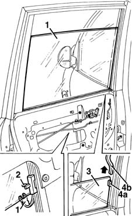
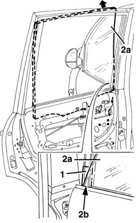

7010D14 rear side door descending window glass - r r with door panel (and mount frame) removed
- Path
- Procedures > 70 FITTINGS > 7010 PASSENGER COMPARTMENT REAR SIDE DOORS > 7010D rear side door window glasses > 7010D14 rear side door descending window glass - r r with door panel (and mount frame) removed
- Kind
- repair procedure (removal / refitting; the operation number is the code)
- Applies to
- all engines; all production periods
- Interactive page
- https://sloeber94.github.io/elrnDB-fMltpl/en/#/2892085
Applies to: all engines; all production periods
 Removing
Removing
 Refitting
Refitting7010A04 rear side door water guard protection - r r or arrange with door panel removed
7010D26 rear side descending window glass scraper (outer) r r
1. Open the window about 1/4 of the way, then disconnect the glass safety retainer.
2. Disconnect the window from the drive pin.
3. Lower the window completely by hand.
4. Release the window fixing piece (4a) from the front (4b) of the run channel, removing and lifting the end of the channel.

Applies to: all engines; all production periods
1. Apply adhesive tape on the outer base of the front pillar.
2. Remove the window (2a) from the door frame, using the gap (2b) at the base of the front pillar.

Applies to: all engines; all production periods
Refitting
RemovingCheck the condition of the window, the fixing piece, the run channel, the drive pin and the safety retainer.
Fit the window in the door frame.
Engage the window fixing piece in the rear run channel, and slide the window upwards.
Open the window about 1/4.
Connect the window to the drive pin.
Connect the window's safety retainer.
Check that the window works properly.
7010D26 rear side descending window glass scraper (outer) r r
7010A04 rear side door water guard protection - r r or arrange with door panel removed
Topics linked from this page (3)
- 7010A04 rear side door water guard protection - r r or arrange with door panel removed
- 7010D22 rear side door descending window glass guide (one) - r r with door panel (and support frame) removed
- 7010D26 rear side descending window glass scraper (outer) r r